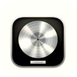
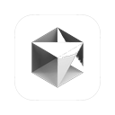
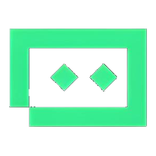

01
广告项目
按片型区分 TVC、宣传片与竖屏平台投放；汽车精选单独主推，扇区左右开合翻阅。
Featured · Automotive
汽车广告精选
座舱、公路与品牌质感——用更大的画幅呈现汽车声音项目。
在扇区左右移动鼠标开合翻阅 · 点击封面观看
2025
工作现场
陈若菁
RUOJING CHEN
声音设计者 · Sound Designer
空间音频 / 全景声 · 影视与广告声音 · 交互声景 · 游戏音频 · 现场综艺 · AI 工作流

Logic
Cursor
TraePortfolio
五种档案，同一种聆听。广告与产线偏交付与标准；影视与游戏交互里，留下更多个人艺术判断。
01
按片型区分 TVC、宣传片与竖屏平台投放；汽车精选单独主推，扇区左右开合翻阅。
Featured · Automotive
座舱、公路与品牌质感——用更大的画幅呈现汽车声音项目。
2025
工作现场
02
影像里的私人声场——从同期到环绕后期，把叙事骨架交还给声音。
03
围绕喜马拉雅全景声有声剧产线：人工制作、AIGC 结构化交付、Agent Skill、主观测评与能量分析。
A
扇形点选试听立体声折混；下载 E-AC-3 Atmos ADM 可在本地回放全景声多声道。海报可后续替换。
B
你负责撰写 / 校对的剧集 JSON：可放脱敏截图或删掉剧名、ID 后的片段。
JSON 截图 01 · 场景 / 对象结构
JSON 截图 02 · 空间 / 路由字段
JSON 截图 03 · 质检相关字段
建议：打码剧名与内部 ID；保留字段命名与层级，体现你对产线 schema 的理解。
C
公司帐号 Skill 不便外发源文件。用「输入 → 动作 → 输出 / 指标」能力卡呈现即可，不贴代码与内部路径。
Skill 01
填写：触发条件、检查项、失败时如何提示交付。
Skill 02
填写：对接格式（Atmos / Audio Vivid / WANOS）、自动核对项。
Skill 03
填写：解决的产线痛点 + 上线后节省的人工步骤。
可再加一张「工作流示意」图（手绘 / FigJam 导出）：人工节点与 Agent 节点并列，不出现公司内网地址。
D
双盲 / 半盲听测框架、量表维度、样本选取与听音环境——比结论截图更能体现方法论。
测评方案 PDF / 封面 + 目录页
量表维度表 · 定位 / 包围 / 清晰度等
结果摘要图 · 可打码样本名
E
响度 / 频段能量 / bed–object 能量分布等客观报告封面与关键页。
能量分析报告 · 封面
关键图表 01 · 如短时能量 / LUFS
关键图表 02 · 如频段 / 通道对比
工作现场
04
游戏与装置是我更自由的声景实验——声音随行为生长，触发、反馈、沉浸。
05
跟组、录制、临场响应——在不可重来的现场里，保证声音可靠、可协作、可交付。
About
我是陈若菁，声音设计者。现于喜马拉雅负责车联网空间音频与全景声内容制作；此前在爱丁堡大学攻读声音设计硕士，本科毕业于浙江传媒学院录音艺术专业。
我的实践横跨影视、广告、空间音频、交互装置与现场综艺。商业项目追求可交付的标准与质感；影视与游戏交互里，留下更多个人艺术判断。技术是工具，聆听是方法。